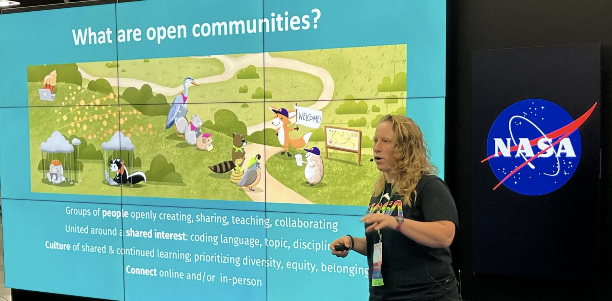
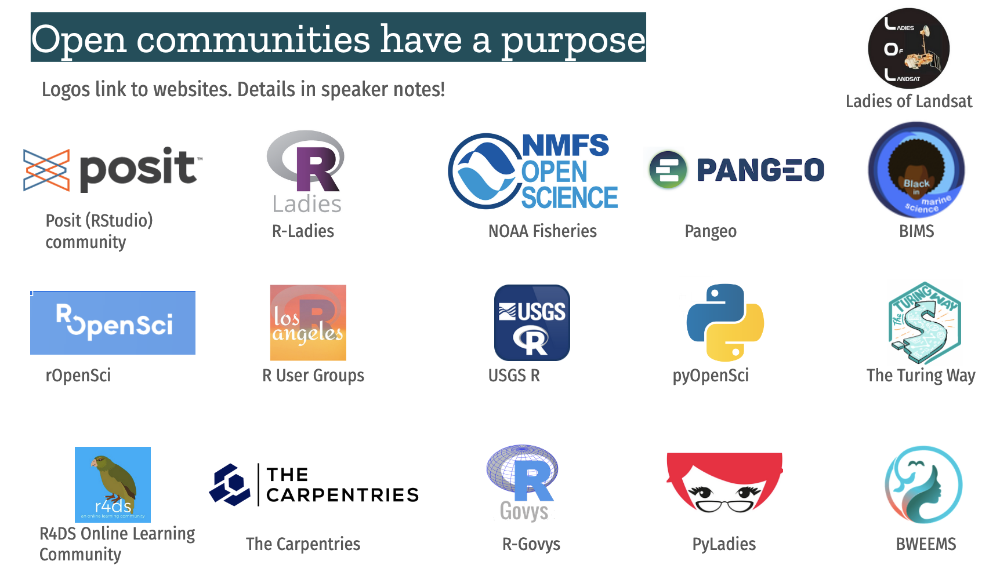

Open communities
Open communities play a big role in advancing research, helping research feel less lonely and reducing the amount of time we all spend being stuck reinventing the wheel. This is a brief (incomplete) introduction to the idea of open communities. We will explore: What are open communities? Why engage with them? How to engage with them? And also how social media is a legit tool for coding and science. Originally focusing on R communities, we are adding more examples beyond including python and Earth science data communities.
In your work, you’re not limited to the people & resources in your physical environment! Open communities are waiting for people like you to come participate in whatever way feels comfortable right now. Awesome people are developing and sharing code and learning resources. They connect through open communities and software (GitHub, forums, Mastodon, Bluesky, Slack)
We can all learn, reuse, remix, share, and contribute and this means less reinventing, more doing, more fun!
What are open communities?

Open communities are groups of people openly creating, sharing, teaching, collaborating.
They are united around a shared interest: coding language, topic, discipline, etc.
They have a culture of shared & continued learning, prioritize diversity, equity, inclusion.
They connect online and / or in-person.
Examples:

Read more in Collaborating & getting help, in R for Excel Users (Lowndes & Horst, 2021).
Open communities have a vibe
They signal whether a community is for you. Check out their Contributing guides, READMEs & CONTRIBUTING.md.
- rOpenSci Community Contributing Guide
- CONTRIBUTING.md template for R packages (Desmet)
- FIMS Developer Guide, NOAA Fisheries Integrated Modeling System has a whole chapter on Contributor Guidelines.
Are they inclusive? Some are more welcoming of newer users e.g. community.rstudio.com vs Stackoverflow #rstats
Why engage with open communities?
- Skillshare (teach & learn)
- Coding, software, workflows
- Collaboration, leadership, DEIJ
- Meet allies, grow friendships, career opportunities
- Help improve science & scientific culture
- Increase visibility & value of coding, data, collaboration skills
- Drive change: modern ways to contribute to science. Formally incentivize and teach! Include in promotion/tenure (we shouldn’t really have to teach ourselves on our own time and not be credited), create jobs
- Carry on & forward your experience from Openscapes
How to get started?
Anywhere you’re starting from is great. Know what you need. You don’t have to be an expert to learn together & teach what you know.
Talk to your colleagues: where do they learn? Seaside Chats are a great way to start - tell others you’re meeting!
Google what you need, see who is working on those topics
- Look for tweets, toots, blogs posts, tutorials, slides, websites, forums
- When you Google, include what you want to do PLUS r, rstats; python.
- Ideas: Big Book of R (compiles 250+ R tutorials), Pangeo Showcase
Engage within your limits: 5 min reading Mastodon toots; 30 min sharing your use case in a public forum; 1 hr attending a webinar then 15 min to share with your team what you learned.
In the past, Twitter has been a legit tool for science, a good way to learn what you need to learn and broadening your horizons while building community. We’ve learned from #rstats, #rstatsES, #rspatial, #pydata, #BlackAndSTEM, #MeTooSTEM. Many of us are still seeking a new thriving place for this kind of discourse. When you find that place, start by listening and learning. Be deliberate; curate who you follow. Like and share when you’re comfortable. Then, contribute – your ideas, your blogs, your papers, your code…
Impacts of open communities
ggplot & knitr were created by students (Wickham & Xie) (McBain 2019)
- Increase visibility & value of coding, data, collaboration skills
- Drive change: modern ways to contribute to science, and not based on hierarchy
R-Ladies changed the landscape of the R project (de Queiroz 2019, opens a pdf)
- Mission: to promote gender diversity in the R community.
- Influenced who is a contributor
- Role-modeling collaboration, leadership, diversity, equity, inclusion, belonging, justice
Culture and belonging
“Open science saved me. I found community in RStudio and its users. Openscapes changed my workflow. I discovered my passion for data science education and engagement” (Fenwick 2022)
Open community examples
Each open community has a purpose. Many have missions focused on diversity, equity, inclusion, and justice, within a specific domain. These are just a few examples, roughly categorized.
- Data Science Learning Community (DSLC)
- The Carpentries
- The Turing Way
- NASA’s Transform to Open Science (TOPS)
Language & Tools
Domain
- Pangeo
- Black in Marine Science (BIMS)
- Black women in Ecology, Evolution, and Marine Science (BWEEMS)
- Ladies of Landsat
Geographical / regional
- Local R User Groups
- Interagency Ecological Program Data Science Project Work Team
Government
- NMFS Open Science (National Marine Fisheries Service / NOAA Fisheries)
- NMFS Openscapes
- R Govys
- USGS-R
- U.S. EPA CEMM Data Science Technical Exchange, R & Python user groups, Data Science Community of Practice
Campus coding clubs
- BioData Club at OHSU
- The Bio-Data Club at Moffitt